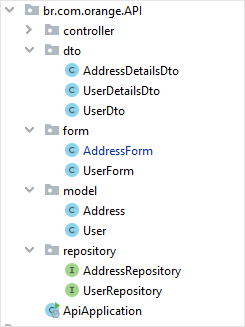
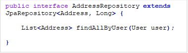

Criando uma API com Java + Spring Boot!
Nos dias atuais, podemos notar uma grande necessidade da integração de diversos sistemas, em diferentes plataformas. Para suprir essa necessidade, podemos realizar a comunicação entre os sistemas, através de diversas tecnologias, dentre elas, podemos destacar a API - Application Programming Interface.
Agora que já sabemos do que se trata uma tecnologia de API, vamos começar a criar a nossa?
Estrutura da Nossa API
Vamos implementar uma API que será responsável por gerenciar o cadastro de usuários em uma plataforma. Ela será composta por:
|
Cadastro Usuário |
||
|
Campo |
Tipo |
Único |
|
Nome |
String |
|
|
Data Nascimento |
LocalDate |
|
|
|
String |
Sim |
|
CPF |
String |
Sim |
|
Cadastro de Endereços |
||
|
Campo |
Tipo |
Único |
|
Logradouro |
String |
|
|
Cidade |
String |
|
|
Numero |
Integer |
|
|
Complemento |
String |
|
|
Bairro |
String |
|
|
CEP |
String |
|
|
Estado |
String |
|
Nos vamos criar também métodos para cadastro de endereços, usuários via API REST.
Vamos dar uma olhada de como será a estrutura da nossa API (na nossa IDE), não se preocupe, que vamos detalhar mais sobre nos próximos tópicos.

Teremos, portanto, os seguintes pacotes:
· Controller;
· DTO;
· Form;
· Model;
· Repository.
1 – Ferramentas Utilizadas
APIs podem ser criadas em diversas linguagens, a nossa será feita utilizando as tecnologias:
· Java 8+;
· Hibernate;
· Spring Boot;
· JPA;
· Banco de Dados em memória H2;
Como IDE para nosso desenvolvimento, vamos utilizar a IntelliJ. Todo o código demonstrado aqui, poderá ser consultado no repositório do GitHub, em caso de dúvidas: Orange Talents.
O Projeto inicial, foi gerado através do Spring Initializr, que você pode encontrar aqui: Spring Initializr.
2 – Entendo um pouco da Estrutura REST
Uma API REST, constitui basicamente da implementação da estrutura REST já disponível no protocolo HTTP, tal como:
· GET: Utilizado para capturar dados da nossa API.
· POST: Utilizado para enviar informações para a nossa API.
· PUT: Utilizado para enviar atualizações de dados em nossa API.
· DELETE: Utilizado para deletar informações na nossa API.
Através dos métodos que são disponibilizados, é possível criar uma interação com diversos sistemas.
3 – Criação Modelos
Como vamos utilizar a estrutura da Java Persistence API, vamos criar modelos (exemplificação) das tabelas do nosso banco de dados na linguagem Java. Para isso, vamos utilizar o pacote “Model” da nossa estrutura.
Para cada modelo,
iremos criar uma nova classe, vamos dar uma olhadinha como ficará: ![@Entity
public class User {
@Id
@GeneratedValue(strategy = GenerationType.IDENTITY)
private Long id;
@OneToMany(mappedBy = "user", cascade = CascadeType.ALL)
private List<Address> addresses;
@Column(unique = true)
private String mail;
@Column(unique = true)
private String cpf;
private String name;
private LocalDate birthDate;
public User() {
}
public User(List<Address> adresses, String mail, String cpf, String name, LocalDate birthDate) {
super();
this.adresses = adresses;
this.mail = mail;
this.cpf = cpf;
this.name = name;
this.birthDate = birthDate;
}](index_files/image005.png)
Alguns pontos importantes, que podemos verificar na construção do código, alguns pontos importantes, são eles:
1. @Entity: Precisamos desta anotação, que provém da JPA, para informar que essa classe Java, também irá ser uma representação de um banco de dados.
2. @Id: Como toda representação em um banco de dados, devemos informar qual campo será a chave primária. Essa anotação, será utilizada também junto com a anotação @GeneratedValue, que irá informar para o JPA qual será a estratégia utilizada para criação da chave primária.
3. @Column: Essa anotação, é fornecida, pelo JPA, para manutenção de campos, que como estão em nossa entidade, serão colunas no nosso banco de dados. Podemos notar que a propriedade unique está como True, isso informa para o JPA, que a coluna não poderá receber valores repetidos.
Antes de verificarmos a última anotação disponível no nosso código, é importante ressaltar os tipos de relacionamento que podem existir entre Classes (Entidades).
· @ManyToMany;
· @ManyToOne;
· @OneToOne;
Elas são responsáveis por implementar a estrutura do modelo de entidade e relacionamento do nosso projeto.
Em nosso projeto, estamos assumindo que um usuário pode ter diversos endereços, logo, utilizaremos a anotação @ManyToMany.
4. @ManyToMany: Essa anotação é utilizada para referenciar uma outra entidade no banco de dados, que possua vez, será feito o relacionamento. Podemos notar também, que ele receber o parâmetro mappedBy, esse parâmetro é responsável por informar para JPA, que o controle dos endereços, será mapeado pela classe de Usuário.
![@Entity
public class Address {
@Id
@GeneratedValue(strategy = GenerationType.IDENTITY)
private Long id;
@ManyToOne(fetch = FetchType.LAZY)
private User;
private String street;
private Integer number;
private String complement;
private String CEP;
public User getUser() {
return user;
}
public void setUser(User user) {
this.user = user;
}
public Address() {
super();
}
public Address(String street, Integer number, String complement, String cEP) {
super();
this.street = street;
this.number = number;
this.complement = complement;
this.CEP = cEP;
}](index_files/image007.png)
Acima, podemos verificar a implementação da classe de Endereço, podemos notar que os termos utilizados na sua implementação são semelhantes à nossa classe de usuários. O que é muito bacana, o JPA nos permite manter uma estrutura semelhantes para nossas classes.
4 – Criação de Formulários
Para a implementação do cadastro de endereços, para como também o cadastro de usuários em nossa API, não é uma boa prática utilizamos para geração do formulário aquelas classes que utilizamos para geração do modelo. Como forma de resolução deste problema, podemos utilizar a funcionalidade de criar formulários, que por sua vez, serão compostos de classes primitivas, e que serão utilizadas como campos na nossa API.
Vamos ver sobre a criação desses formulários abaixo:


Podemos notar que, as classes foram construídas, utilizando apenas tipos de dados primitivos. Sobre as anotações que temos junto aos atributos da classe, vamos dar uma olhada:
· @NotNull: Indicará ao Spring Boot que não serão aceitos valores nulos pela API.
· @NotEmpty: Indicará ao Spring que o atributado não irá aceitar que o campo não seja passado no momento da nossa API.
Podemos notar também, que somente uma Classe possui duas anotações especificas, a Classe de Formulário de usuário. Vamos ver mais sobre ela:

Podemos ver que o atributo birthDate possui duas anotações especificas, são elas: @JsonFormat e @DateTimeFormat. Como sabemos, o Spring oferece diversos tipos de anotações que podem ser utilizadas para a validação de formulários, no nosso caso precisamos utilizar estas duas anotações, para informar ao Spring, como será o formato da data que irá chegar para ele realizar a conversão para o tipo de data aceito pelo java.util.LocalDate.
5 – Manipulação de Dados com o Repository
Nós podemos realizar consultas utilizando a JPA de diversas formas, e uma delas é a JPQL, que é uma linguagem com uma sintaxe bem semelhante com o SQL que já conhecemos, entretanto devido a necessidade de escrever queries, acaba por se tornar um processo muito manual; em nosso projeto, vamos utilizar como ferramenta o Spring Data.
Com ele, as nossas consultas das entidades no banco de dados serão mais fáceis, e dinâmica. Para isso, será necessário a criação de classes Repository para manipulação das entidades.
Vamos ver como realizar a implementação:


A implementação das classes repository, tem como objeto principal, a herança da classe JpaRepository, que provém do Spring.
Vamos ver mais a frente como utilizar os métodos disponíveis na classe JPARepository
6 – Data Transfer Objects
Para implementação das consultas via método GET, vamos utilizar os Data Transfer Objects, ou comumente chamado DTOs. Eles serão responsáveis por retornar, somente aqueles campos que desejarmos, e não todos os campos do nosso banco de dados.
Vamos ver as implementações dos DTOs criados para retornar os valores da nossa API.


A implementação das classes DTo, nada mais, são que exemplificação dos campos que iramos utilizar para retornar na nossa API.
Agora que temos a estrutura do nosso projeto, vamos dar inicio a implementação do Controller, que será responsável por gerenciar todas as funcionalidades do nosso projeto.
7 – Implementando nosso Controller
Agora vamos dar inicio a nossa implementação para controle da API, vamos dividir ela em algumas partes, vamos lá?
7.1 Criando método para cadastrar usuários
Vamos dar uma olhadinha na classe UserController abaixo, com o seu primeiro método.

Na classe acima podemos verificar, os seguintes pontos que podemos considerar importantes:
@RequestController: Usado para informar ao SPRING que é um controlador Rest.
@RequestMapping: Vamos utilizar para definir qual é a URL da nossa API
Também vamos utilizar a classe que criamos UserRepository. Através da anotação:
@AutoWired.
 Agora, vamos olhar mais
detalhadamente nosso método POST:
Agora, vamos olhar mais
detalhadamente nosso método POST:
Vamos comentar, primeiramente das nossas anotações disponíveis, e suas funcionalidades:
@PostMapping: Ele dirá ao Spring, qual operação ele irá executar; essa anotação pode ser também, dos demais tipos de protocolos HTTP, tais como: GET, PUT e DELETE.
@Transactional: Essa anotação será responsável por dizer ao JPA, que essa é uma operação que deverá ser gravada no banco de dados. Caso não haja, ocorrerá de a operação ser realizada, porém sem replicação no banco de dados.
Agora, vamos olhar nosso método, podemos reparar que ele retorna um método ResponseEntity, e que ele recebe, aquela classe que criamos anteriormente, a UserForm.
A Classe Form, entretanto, não é uma entidade do banco de dados, necessitando por sua vez, realizar uma conversão, ou seja: Eu preciso converter o UserForm para uma User, e assim salvá-la no banco de dados.
 Vamos ver como foi
implementado na classe UserForm, um método para realizar a conversão:
Vamos ver como foi
implementado na classe UserForm, um método para realizar a conversão:
Podemos ver que, ele transforma as informações em uma classe User, e a retorna para o controller, que por sua vez irá realizar a persistência no banco de dados.
Podemos notar também, 2 retornos disponíveis no nosso método POST, como segue:
A Classe HTTPStatus, nos fornece diversas opções para o tratamento das requisições HTTPS, podendo retornar diversos estados, de acordo com a necessidade de cada aplicação e situação.
7.1 Criando método para cadastrar Endereços
![@RestController
@RequestMapping("/address")
public class AddressController {
@Autowired
private AddressRepository addressRepository;
@Autowired
private UserRepository userRepository;
/* To Implement a Address, you must provide the User Id*/
@PostMapping("/{id}")
@Transactional
public ResponseEntity<?> newAddress(@RequestBody @Valid AddressForm form, @PathVariable("id") long id) {
User user = userRepository.getOne(id);
Address add = new Address(form.getStreet(), form.getNumero(),
form.getComplement(), form.getCEP());
add.setUser(user);
addressRepository.save(add);
return ResponseEntity.ok().build();
}}](index_files/image023.png) Vamos utilizar para o
cadastro de Endereço, a mesma estrutura que utilizamos no cadastro de usuários,
vamos dar uma olhada na classe:
Vamos utilizar para o
cadastro de Endereço, a mesma estrutura que utilizamos no cadastro de usuários,
vamos dar uma olhada na classe:
Porém, podemos notar que nossa URL do método @PostMapping, está com um id, isso se faz necessário, uma vez que, não é possível cadastrar endereços sem usuários, então temos que informar qual é o ID do usuário a qual desejemos associar o endereço.
7.2 Criando método para Listar Usuários
Para a listagem de usuários cadastrados, vamos utilizar do método GET, vamos verificar sua implementação abaixo:
Ele é um método relativamente simples, iremos utilizar a nossa classe DTO, que criamos nos passos anteriores, entretanto, precisamos realizar a conversão do User para UserDTo, para isso vamos criar o seguinte método na classe UserDTo:

Ele é um método, que irá, para cada usuário disponível, irá gerar um usuário DTo, e irá retorná-lo para o método do controller.
7.3 Listando Endereços de Usuários
Para a listagem de endereços dos usuários que foram cadastrados, vamos implementar o seguinte método:
 Ele será do tipo GET, e
também será necessário passar o ID do usuário, para que assim a API consiga
realizar a consulta, vamos também necessitar de realizar a conversão do
AddressDetailsDto. Vamos ver o seguinte método:
Ele será do tipo GET, e
também será necessário passar o ID do usuário, para que assim a API consiga
realizar a consulta, vamos também necessitar de realizar a conversão do
AddressDetailsDto. Vamos ver o seguinte método:
8 – Funcionamento da nossa API
Para testar as funcionalidades da nossa API, vamos utilizar o PostMan para fazer as requisições de GET e POST que implementamos.
Vamos ver primeiro, como funciona a funcionalidade para cadastrar um usuário, vamos utilizar alguns dados fictícios para isso.
Ela irá nos retornar:
Podemos consultar esse registro que fizemos, através da interface do H2, banco que utilizamos para implementação:
Usuário:

E seu endereço:
Agora, podemos também, realizar a associação de um endereço, a um usuário, vamos utilizar o PostMan novamente:

Ele irá nos retornar:
Podemos ver também, no console do H2:
Vamos verificar agora, a consulta dos endereços cadastrados para cada usuário:

Ele irá nos retornar os seguintes dados:
Podemos validá-los, junto ao console do H2, como segue:

Agora já podemos seguir com o uso da nossa aplicação. Você também pode verificar este documento no Github pages: Como Criar uma API?